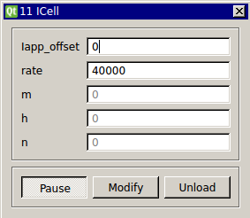

I-Cell
Requirements: None
Limitations: None

Module for a current-clamped cell.
Input Channels
- input(0) - Iapp (A)
Output Channels
- output(0) - V
Parameters
- Iapp_offset - uA/cm^2
- rate - Hz
States
- m - Sodium Activation
- h - Sodium Inactivation
- n - Potassium Activation